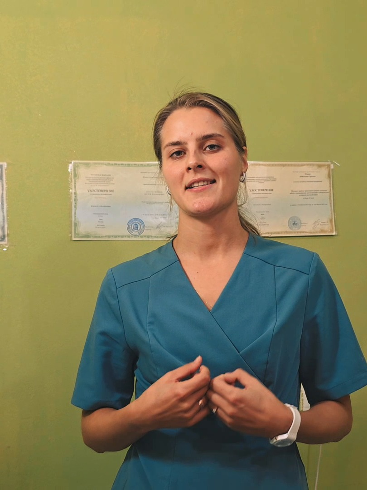
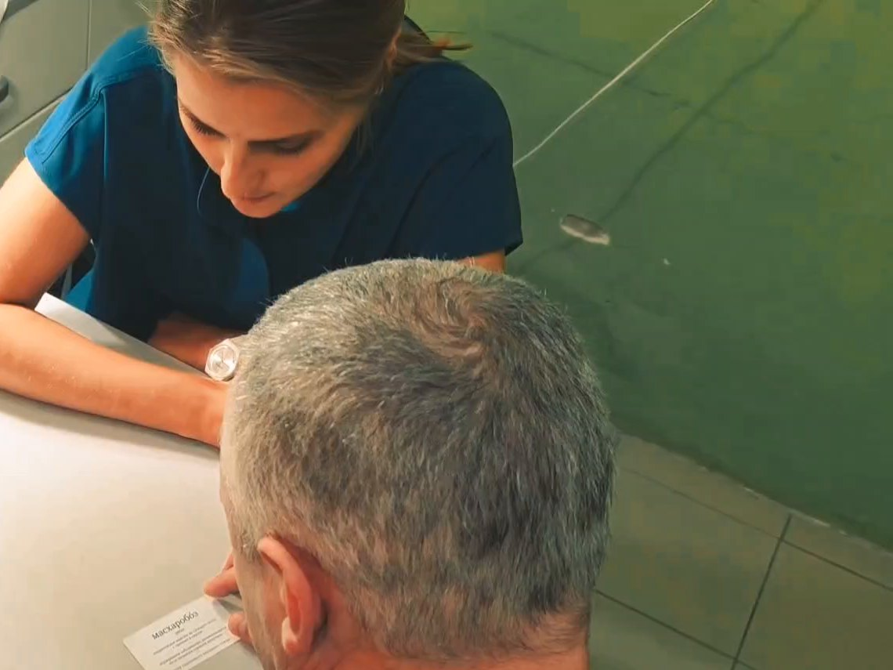

Нейрологопед. Онлайн по всей России, очно по договорённости в Пушкино
Возвращаю речь после инсульта и травмы. Занимаюсь с детьми, у которых речь не идёт
Анастасия Ильина, медицинский логопед и магистр нейродефектологии. Каждый день работаю со взрослыми в отделении медицинской реабилитации, победитель Всероссийского конкурса специалистов с высшим немедицинским образованием 2026 года в номинации «Медицинская логопедия».
Записаться на диагностикуПервая встреча онлайн: посмотрю, что с речью, и скажу честно, чем помогу и сколько это займёт.

- В логопедии с 2012 года: школы Москвы и Петербурга, с 2023 - реабилитация взрослых после инсульта
- МПГУ: логопедия, магистратура по нейродефектологии; клиническая психология; эрготерапия (РНИМУ им. Пирогова)
- Победитель конкурсов «Медицинская логопедия» 2026 и «Таланты медицинской реабилитации» 2025
С чем ко мне приходят
Взрослые после инсульта, травмы головы, операции
- не говорит совсем или подбирает слова с трудом, путает их (афазия);
- речь смазанная, невнятная, «каша во рту» (дизартрия);
- пропал или сел голос;
- трудно глотать, поперхивается едой и водой;
- не может читать и писать, как раньше;
- перекос лица, не слушается половина рта.
Это моя ежедневная работа в отделении реабилитации: сотни взрослых после инсульта в год. Онлайн занимаюсь тем же - речью, голосом, чтением и письмом; глотание и массаж требуют очной встречи, скажу об этом на диагностике.
Дети
- в два-три года не говорит или говорит несколько слов;
- не выговаривает звуки, речь невнятная;
- в школе не даются чтение и письмо: пропускает буквы, путает, читает по слогам в третьем классе;
- перед школой: речь, звуки, схема слова, чтобы учиться было легко.
Десять лет работала учителем-логопедом в школах, написала книгу «Годовой курс развития речи у ребёнка. 5-6 лет». С детьми занимаюсь онлайн вместе с родителем: мама или папа сидят рядом и потом повторяют дома.
Как проходит
- Заявка. Пишете, для кого и что с речью. Отвечаю в тот же день и предлагаю время.
- Диагностика. 40 минут онлайн. Смотрю речь, голос, понимание, чтение и письмо, спрашиваю, как было до болезни и чем человек жил. Говорю, что поправимо, с чего начнём и сколько примерно займёт.
- Занятия. Онлайн, по ссылке с этой страницы, без установки программ; очно - по договорённости, в Пушкино. Сколько раз в неделю и как долго - у каждого своё, назову после диагностики.
- Семья - часть работы. Со взрослым после инсульта рядом близкий человек: помогает подключиться и повторяет упражнения между занятиями. Это половина результата.

Чем работаю
Традиционные методики - и свои приёмы, чтобы человек оказался не в кабинете, а в магазине, на рыбалке, за столом с семьёй. Речь нужна для жизни, а не для протокола.
- Голос и дыхание через пение. Методика Огороднова: дыхание, голос и движение перестраиваются через пение и тактирование, а не через изолированные упражнения на звук. Училась у прямой ученицы автора. Перенесла методику на взрослых после инсульта - в стране так почти никто не работает; об этом моя статья 2025 года.
- Народная песня и скороговорка для дикции. Тексты со вставками-«помехами» и песни с долгими окончаниями ставят артикуляцию лучше любой таблицы.
- Логопедический и зондовый массаж. При очной встрече; онлайн показываю близким безопасную часть.
- Материалы под человека, а не «вообще». Взрослому не даю детские прописи: это напоминает о болезни. Подбираю тексты под его профессию и интересы, крупным шрифтом. Ребёнку - игру, в которую он захочет вернуться.
«Моя внутренняя мотивация - видеть в человеке человека, его сильные стороны, его слабые стороны, помогать ему быть хоть немножечко прежним, возвращать его жизнелюбие, чтобы речь ему пригодилась для радости в том числе.»
Кто я
Анастасия Ильина, 1994 года рождения. Логопедию выбрала, потому что хотела быть и педагогом, и медиком, - это ровно между. С детьми работаю с 2012 года, с 2016-го - учителем-логопедом и дефектологом в школах Москвы, Петербурга и Сергиева Посада. С 2023 года - медицинский логопед и специалист по эргореабилитации в отделении медицинской реабилитации областной больницы в Пушкино: взрослые после инсульта, травм и операций на мозге.
Образование
- МПГУ, бакалавр специальной дефектологии, профиль логопедия, 2016
- МПГУ, магистратура «Нейродефектология и комплексная реабилитация лиц с нарушениями коммуникации», 2018
- МПГУ, профессиональная переподготовка «Клиническая психология», 2018
- РНИМУ им. Н.И. Пирогова, переподготовка «Эргореабилитация (эрготерапия)», 2023
- МОНИКИ им. М.Ф. Владимирского, «Медицинская логопедия», 2024; аккредитации по медицинской логопедии и эргореабилитации, 2024
- около сотни курсов и семинаров с 2015 года: логопедический и зондовый массаж, дисфагия, афазия, дизартрия, фониатрия, нейропсихология
Победы и публикации
- Победитель Всероссийского конкурса врачей и специалистов с высшим немедицинским образованием, номинация «Медицинская логопедия», 2026
- Победитель регионального этапа конкурса «Таланты медицинской реабилитации», 2025
- Диплом I степени МПГУ за научную работу о речевом дыхании у дошкольников с дизартрией, 2016
- Книга «Годовой курс развития речи у ребёнка. 5-6 лет», издательство Тойвиль, 2022 (вышла под фамилией Юдина)
- Статья «Опыт применения методики Д.Е. Огороднова при реабилитации больных после ОНМК», международная конференция «Современные медицинские исследования», 2025
Амбассадор фонда ОРБИ - первого в России фонда помощи людям после инсульта. Бегаю: второе место на километре в забеге «Вместе против инсульта».
Оставить заявку
Напишите, для кого и что с речью. Отвечу в тот же день.
Занятие онлайн
Занятия идут по видеосвязи прямо на этой странице: ничего ставить не нужно, с телефона или компьютера. Перед занятием пришлю код комнаты. Нужны камера, микрофон и тихое место; взрослому после инсульта - близкий рядом в первый раз.
Войти в комнату занятия